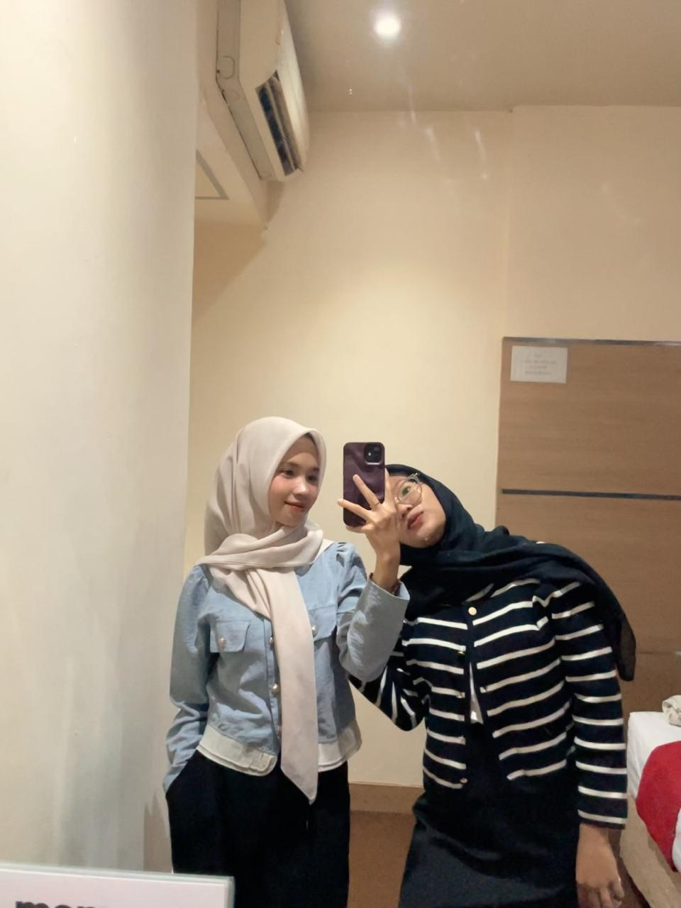
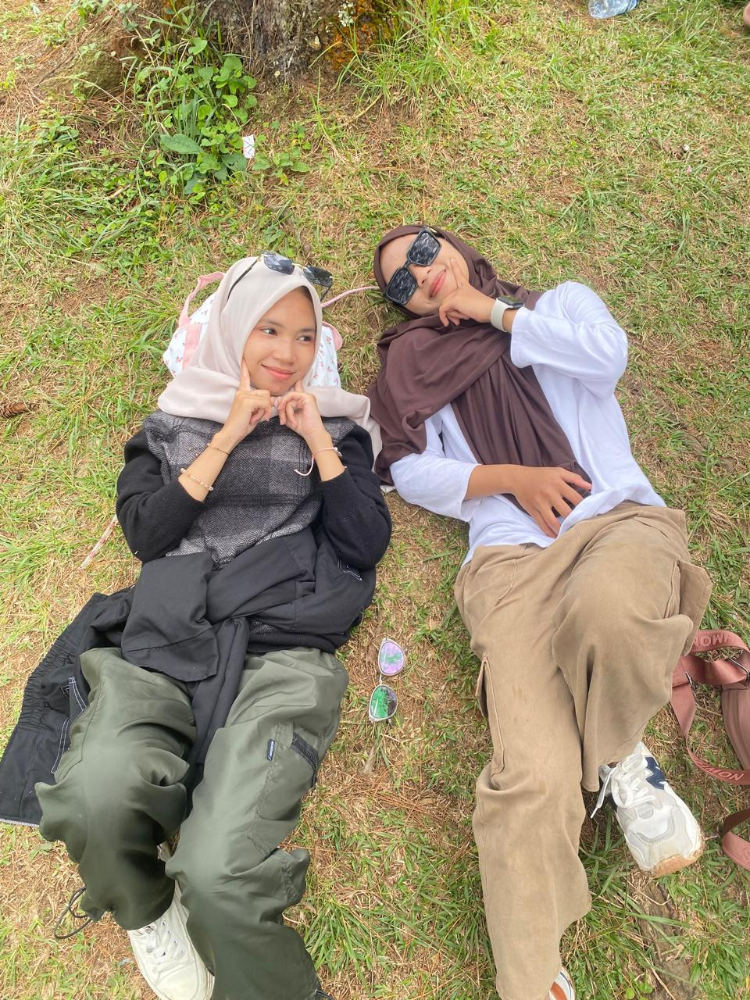
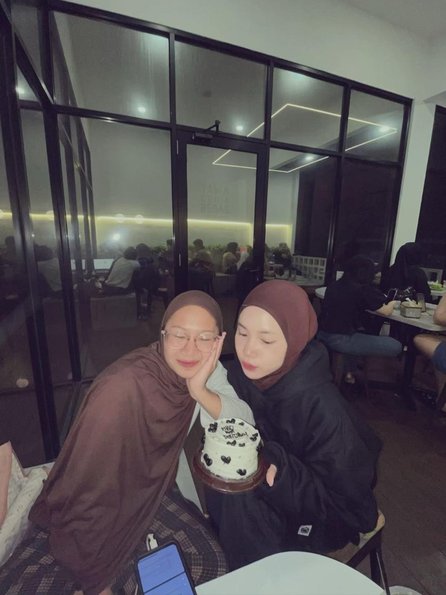

SELAMAT & SUKSES
Dinda Fitria
Indriana
Selamat telah menyelesaikan skripsi! 🎉
Setelah melewati banyak proses, revisi, perjuangan, dan mungkin sedikit drama dengan skripsi... akhirnya sampai juga di titik ini. 💛
LITTLE MEMORIES
Sedikit tentang perjalananmu
Setiap perjalanan punya cerita. Dan perjalanan menuju titik ini pasti punya banyak hal yang nggak akan terlupakan diawal eby bertemu kakak kita tidak saling mengenal dan tidak menyangka hari itu ada bertemu sama kakak seorang cewe kecil nan manis ( jawa jawa ). 💛

Awal perjalanan
Awal perjalanan yang eby lihat mungkin di hari pertama kakak magang datang ke tempat yang mungkin ga pernah terbayangkan dan bertemu seorang wanita feby muharani napitupul mungkin di awal ini hal biasa bertemu dengan orang lalu berpisah bagi eby tidak in bukan hal biasa bahkan lebih dari hal luar biasa bertemu sama kakak jalani hari hari sama kakak tawa tertahan bisa terlepas dengan mudahnya.

Di tengah proses
Di tengah proses kakak pulang dari magang dan kembali menjadi mahasiswa kembali dengan penuh tugas/kegiatan untuk perkuliahan itu mungkin di bagian tengah proses ini eby tidak terlalu banyak masuk mengikuti nya tapi disin lah titik lelah kakak sakit, kakak di tinggal sama xiway ( si aceh nan jahil itu ), lalu mungkin hanya beberapa yang bisa eby rasakan d pertengahan ini selebihnya kakak yang menjalani nya tapi semua akan berakhir.

Sampai di titik ini
Akhirnya semua perjuangan terbayarkan kakak menyelesaikan skripsi dan revisian nya Sekarang mungkin kakak lega tapi kaka juga harus ikhlas dengan yang sudah terjalani dan dititik ini lah yang kak tunggu nice dinda gada yang harus kamu perjuangin untuk malam yang malam itu ( paham ga? adek sok berkata kata aja ni ) yaa tapi ini bukan akhir melainkan awal buat lembaran baru setelah lepas dari mahasiswa wkwk.
A LITTLE SURPRISE
Coba keberuntunganmu
Klik tombol di bawah ini dan lihat pesan apa yang kamu dapat hari ini. ✨
ONE CHAPTER COMPLETE
Skripsi selesai.
Tapi perjalananmu
baru saja dimulai jadi bersiap lah untuk hari selanjutnya.
Semoga langkah setelah ini dipenuhi banyak kesempatan, kebahagiaan, dan hal-hal baik yang memang kakak layak dapatkan.
See you at graduation, Dinda! 💛